The aim of this series of tutorials is to teach complete beginners how to learn balloon twisting "from scratch", and I've noticed that at first, quite a few of you, children as well as adults, often have trouble tying balloon knots.
The advantage of the technique used in this tutorial is that it avoids any friction of the balloon against the skin of your fingers. It's a detail that may seem innocuous but it's very significant when you have to tie hundreds of knots one after the other. And that's exactly what will happen once your fame as a balloon twister reaches beyond your family, your neighborhood, or even your region. Which is why you need to acquire good habits straight from the start.
Try it slowly and regularly until this sequence of movements has become imprinted into your muscle memory and you can carry it out quickly without even thinking about it.
Have fun... and practice regularly!
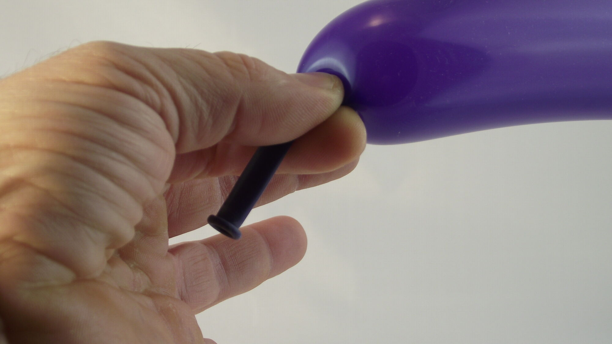
1- Inflate a balloon and leave as much room as possible after the nozzle of the balloon which should be directed towards your palm, which itself should be facing you.
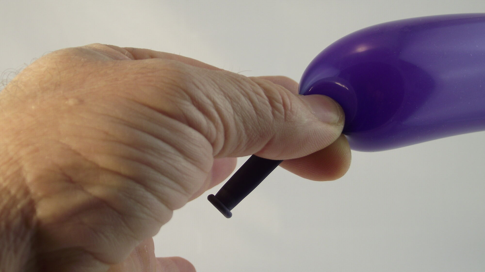
2- The thumb and forefinger should pinch the balloon and prevent the air from escaping. Slowly, turn your hand...
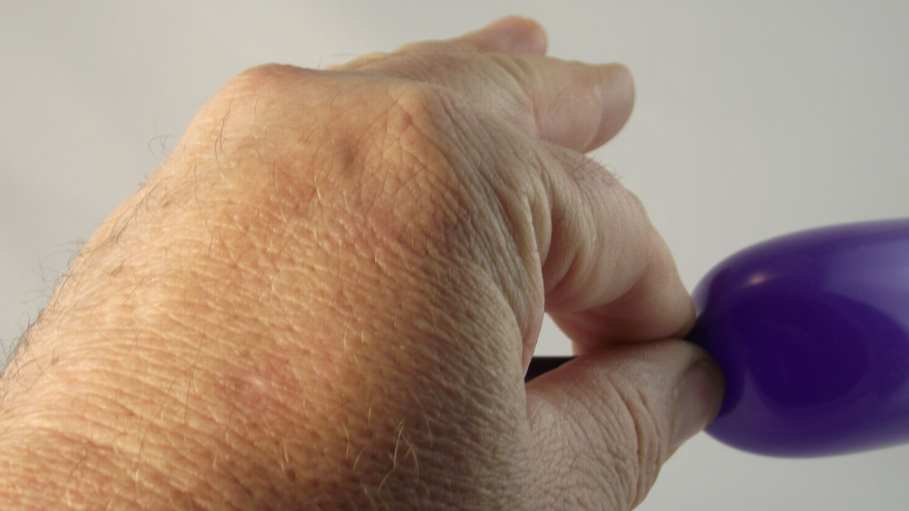
3- just a bit more... you should no longer be able to see your palm.
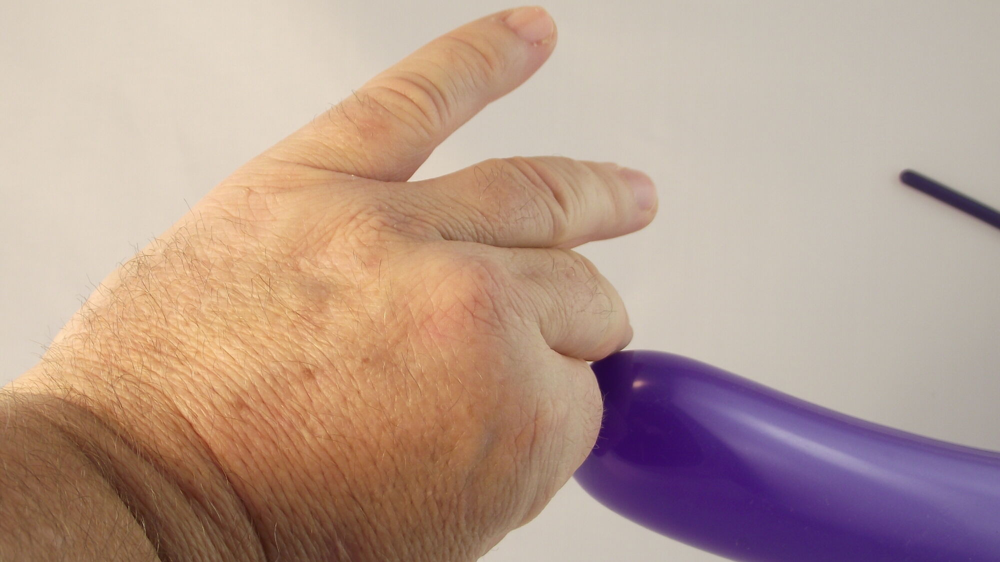
4- Once your hand is completely facing away from you…
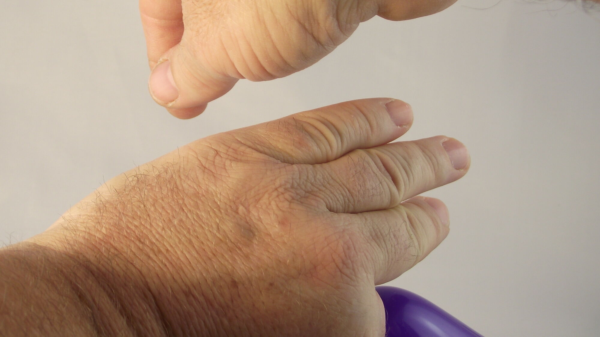
5- pass your other hand over it to pick up the nozzle of the balloon.
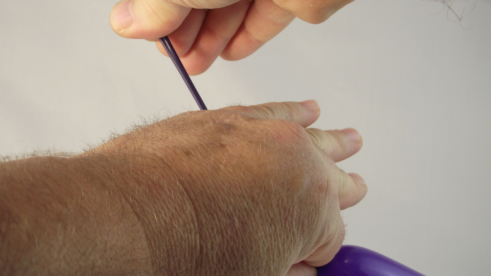
6- Pull on the nozzle, forming a long stretch of balloon.
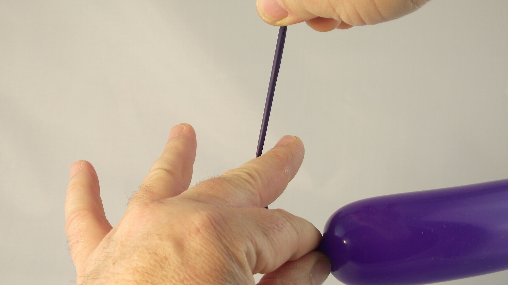
7- Move your fingers apart while turning your palm towards you once again.
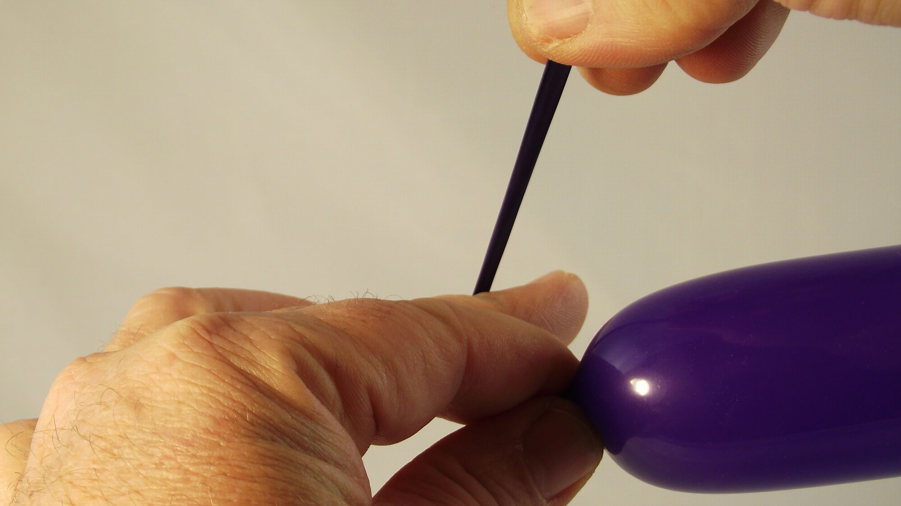
8- Pass the long stretch of balloon just behind your middle finger...
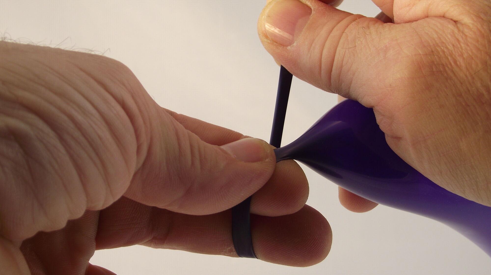
9- Finish turning your hand so that your palm is facing you again.
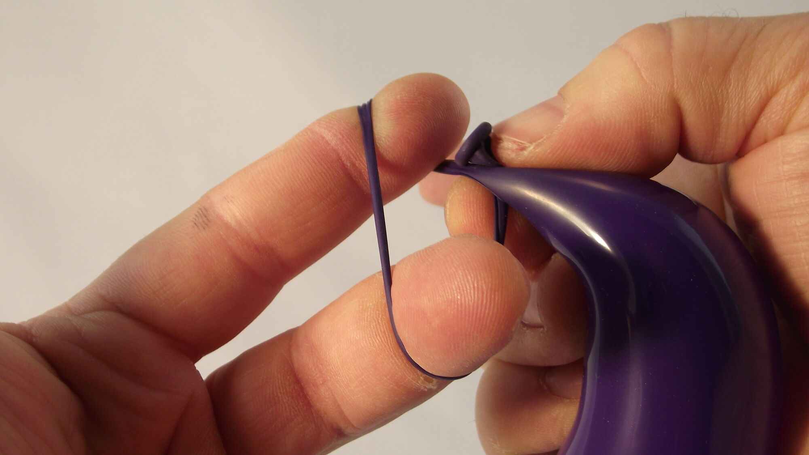
10- Form a loop around your forefinger and middle finger, placing the nozzle just behind the base of the inflated part of the balloon.
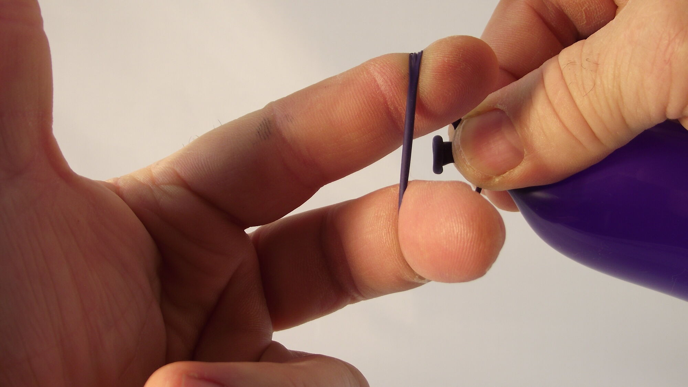
11- Then feed the nozzle of the balloon through the center of the loop.
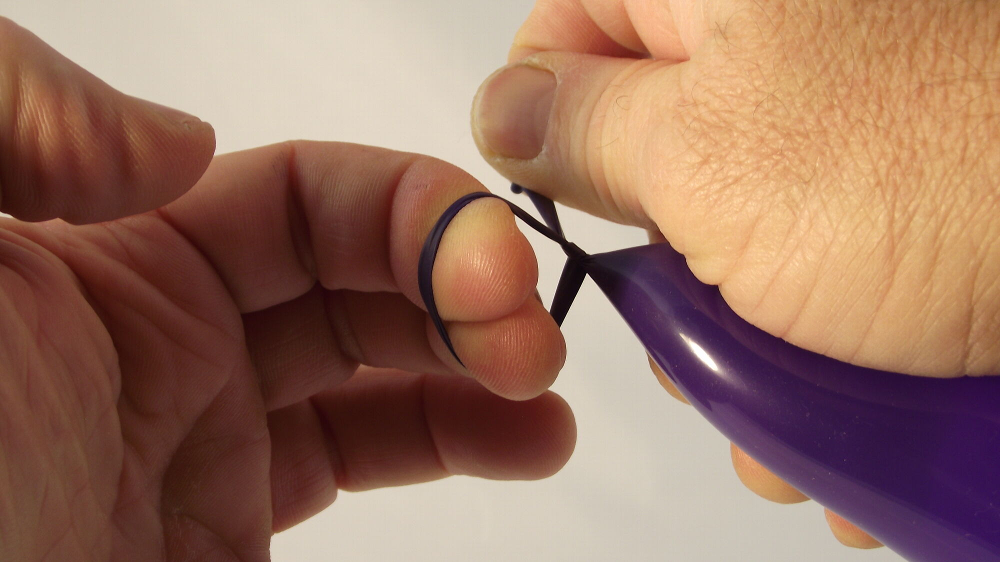
12- Once the nozzle of the balloon has passed through the loop, pick it up with your thumb and forefinger.
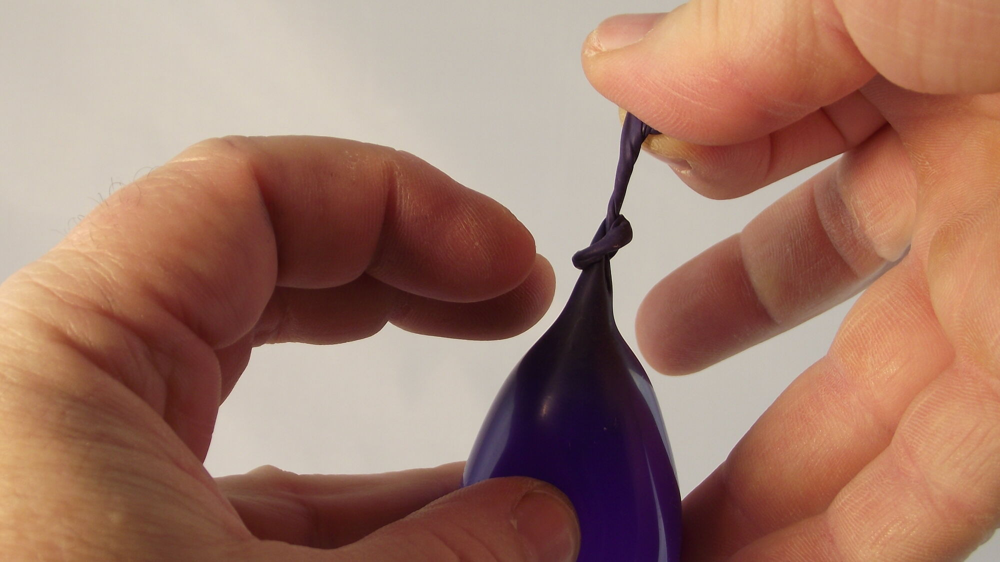
13- Take your fingers out of the loop so that the knot can close up completely. Having done so, now move the balloon to your other hand...
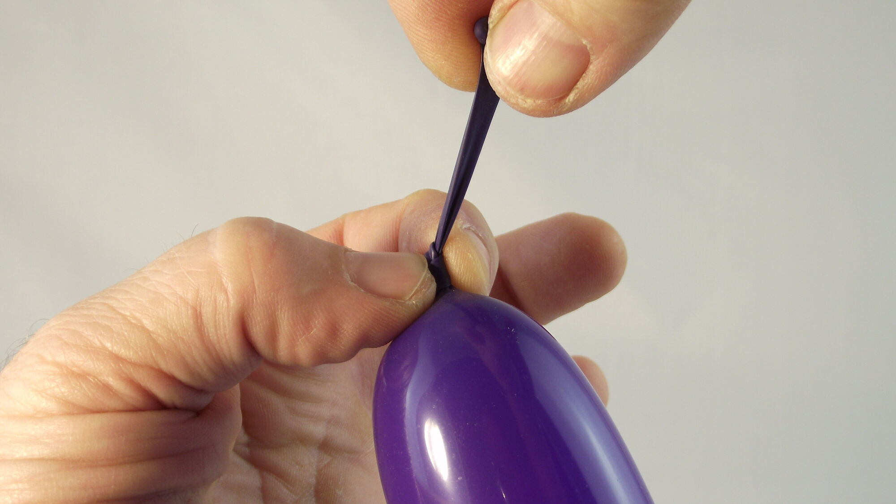
14- so you can tighten the knot properly.15- That's all there is to it!
See you soon! For another lesson... with Môssieur Ballon!